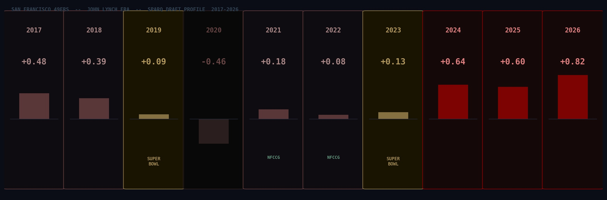
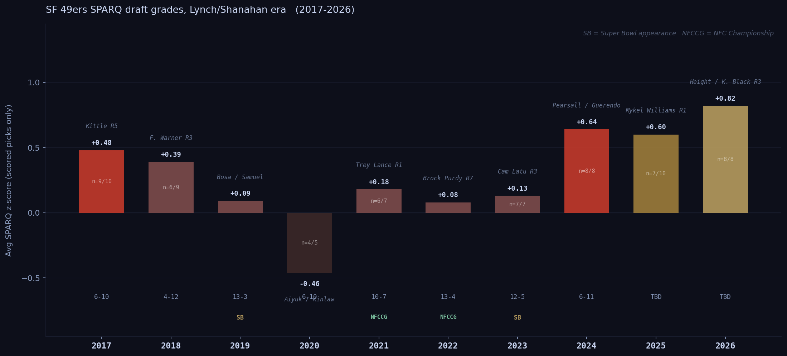

John Lynch took over as 49ers GM with zero front-office experience. Nine years and ten draft classes later, here's what the combine data says about how he built it — and how it held up.
John Lynch had never worked in an NFL front office when Kyle Shanahan called him in January 2017. He'd just retired from the Fox Sports broadcast booth. The 49ers had gone 2-14 the year before. The roster was essentially bare.
What followed was one of the more interesting roster-building exercises of the modern NFL era. We have SPARQ z-scores for every Lynch draft class from 2017 through 2026. Here's what the data shows, class by class, player by player.
One framing note: draft classes are lagging indicators. The players selected in 2017 didn't determine what happened in 2017 — they determined what happened in 2020 and 2021, once they'd developed. We're evaluating each class by the players it produced, not by what the team did that season.

Average SPARQ z-score per Lynch-era draft class, scored picks only. Zero = league average at position. Lynch-era average across all ten classes: +0.27.
Eight of ten Lynch-era classes averaged a positive SPARQ z-score. The Lynch-era average across all ten classes: +0.27. That's a quarter standard deviation above the league mean, sustained over a decade. The trend has moved upward in the last three years: 2024 (+0.64), 2025 (+0.60), and 2026 (+0.82) are the most athletically tested classes Lynch has assembled.
The one negative class, 2020 at -0.46, had only five picks and no combine due to COVID. Read that number carefully.
Solomon Thomas · R1 #3 overall · DT · z=+2.32
The second-highest SPARQ score of any Lynch-era pick, and a cautionary tale about what athleticism alone can't tell you. Thomas tested like a freak athlete — elite explosion, elite quickness — but played defensive tackle in a scheme that needed edge-setting 3-techniques, not interior pass rushers. He produced 13 sacks across six professional seasons before retiring. The number was right; the position was wrong.
Reuben Foster · R1 #31 overall · LB · no combine data
Off-field issues ended his career before it started. No SPARQ score. The story ends there.
George Kittle · R5 #146 overall · TE · z=+0.93
The most important pick of the Lynch era. 145 teams passed on him. His SPARQ is +0.93 — exceptional for a tight end, driven by agility and explosion numbers that reflect the exact profile required to run routes like a wide receiver and block like a fullback in Shanahan's wide zone system. Three All-Pro selections. Arguably the best tight end in football at his peak. Lynch and Shanahan found a player whose testing matched the exact demands of what they needed. That's the job.
CJ Beathard · R3 · QB · z=+0.98
Good athlete, never developed as an NFL starter. Career backup. The SPARQ said he could move; the NFL said he couldn't read a defense.
Ahkello Witherspoon · R3 · CB · z=+0.51
Three solid seasons as a starter in San Francisco, then a longer career with Pittsburgh and others. Serviceable, not a star. The testing was roughly right.
Joe Williams · R4 · RB · z=+0.36
A running back from Utah who never played a regular-season snap. Cut before the season. The SPARQ was fine; the player wasn't ready.
DJ Jones · R6 · DT · z=+0.32
The quiet hit of the 2017 class outside of Kittle. Jones was a 3-technique DT who tested above average and developed into a productive interior lineman — disruptive against the run, enough pass rush to earn a significant free agent contract with the Raiders in 2021. Lynch found a contributing NFL starter in the sixth round. That's exactly what the late rounds are supposed to do.
Pita Taumoepenu · R6 · EDGE · z=+0.22
An edge rusher who spent time on the practice squad and had a limited professional career.
Trent Taylor · R5 · WR · z=-0.72
A slot receiver who tested below average but contributed as a chain-mover for the 49ers for several seasons before injuries caught up with him. Another data point for SPARQ having a floor, not a ceiling.
Adrian Colbert · R7 · S · z=-0.60
A safety who appeared in games for San Francisco and had a journeyman career thereafter.
The 2017 class is Kittle and, to a lesser extent, Jones. Kittle is the superstar find; Jones is the reminder that Lynch has been finding contributing starters in the late rounds from the very first year. Everything else in this class is footnotes.
Mike McGlinchey · R1 #9 overall · OT · z=+0.44
A solid, reliable NFL starting tackle for six seasons. Durable, consistent, not elite. Hit free agency and signed a large deal in Denver. Above average by SPARQ; above average by outcome.
Dante Pettis · R2 · WR · no combine data
Taken 44th overall, out of the league in three years. A bust at a premium pick with no data to evaluate athletically.
Fred Warner · R3 #70 overall · LB · z=+1.00
Warner's SPARQ of +1.00 reflects elite athleticism for a linebacker: the speed to run sideline-to-sideline, the explosiveness to blitz, the agility to cover running backs in space. Shanahan's scheme demands every one of those things from every down linebacker. Warner became one of the best at the position in the NFL — four Pro Bowls, consistent All-Pro consideration. Lynch found him in the third round because almost everyone else underestimated what his athleticism could do in the right system.
Tarvarius Moore · R3 · S · z=+0.55
Above-average tester at safety. Spent most of his career on special teams. The athleticism was there; the position development wasn't.
DJ Reed · R5 · CB · z=-0.23
Below average by SPARQ, released by San Francisco, developed into a Pro Bowl-caliber corner with Seattle and the Jets. The testing suggested limited upside; the outcome proved otherwise. Reed is the legitimate counterexample in this class — and a miss by the 49ers in that they didn't develop him.
The 2018 class is Warner. He and Kittle are the connective tissue of the Lynch era — both third-round picks, both high SPARQ for their position, both franchise cornerstones.
Nick Bosa · R1 #2 overall · EDGE · z=+1.01
The best defensive player Lynch has drafted. Bosa's SPARQ of +1.01 reflects genuine elite athleticism for an edge rusher — the explosion and quickness to win with a first step, the strength to convert speed to power. He came out after one college season at Ohio State due to a core muscle injury. Defensive Player of the Year in 2022. One of the best pass rushers in the league in every healthy season he's played.
Deebo Samuel · R2 #36 overall · WR · z=+0.36
Above average but not exceptional by SPARQ — roughly the 60th percentile for wide receivers. What the combine doesn't capture is his physicality after contact and his ability to function as a running back in the open field. An All-Pro in 2021. The testing identified an above-average athlete; the scheme unlocked a weapon.
Dre Greenlaw · R5 · LB · z=+0.23
Fell to the fifth round out of Arkansas. Slightly above average athletically. Became a starting ILB who graded well in coverage for several seasons before a torn Achilles in 2024. A fifth-round find who gave SF real starter value for four years.
Jalen Hurd · R3 · WR · z=+0.25
Taken as a converted receiver from Tennessee. Never played a regular-season snap due to injuries. Zero return on a third-round pick.
The +0.09 average is misleading. Two elite testers in the top 40 picks (Bosa and Samuel), both franchise cornerstones. The rest of the class is late-round noise pulling the average down. The shape of the 2019 class — not its average — is what Lynch was actually doing.
Brandon Aiyuk · R1 #25 overall · WR · z=+0.23
Above average athletically for a wide receiver. He developed slowly in his first two seasons, then broke out into All-Pro-caliber production by 2022-2023. A contract dispute and trade request clouded 2024, but his on-field talent is not in question. A legitimate hit on the pick — a player whose athleticism translated to elite route running and yards-after-catch production.
Javon Kinlaw · R1 #14 overall · DT · no combine data
No combine due to COVID. Multiple knee surgeries ended his career before it began. He never became an NFL factor. The 2020 class lost both first-round picks in terms of real-world value.
Jauan Jennings · R7 · WR · z=-1.16
Significantly below average by SPARQ. He became a low-key contributor who started games for the 49ers in 2023-2024. Low athleticism, high football IQ. He's the exception that proves the rule — and proof that SPARQ has a floor, not a ceiling, as a predictor.
Colton McKivitz · R5 · OT · z=-1.32
Below average for an offensive tackle. Has been a backup and spot starter for SF across four seasons. The testing was right.
The 2020 class produced Aiyuk, who is a legitimate impact player. Kinlaw was a first-round miss. The class's negative SPARQ average is a COVID artifact as much as anything else — no combine, limited data, a compressed evaluation window.
Trey Lance · R1 #3 overall · QB · no combine data
The defining pick of this class — a quarterback taken third overall via trade-up, for whom we have no combine data. Lance played three games as a starter before a broken ankle in 2022, was traded to Dallas in 2024, and released. The Lance pick was a bet on arm talent and mobility that didn't pan out. SPARQ doesn't apply to quarterbacks; the outcome was a failure on every other dimension too.
Elijah Mitchell · R6 · RB · z=+0.92
The hidden gem of the 2021 class. Mitchell fell to the sixth round despite testing in the 87th percentile of running backs by SPARQ. He became the 49ers' lead back in 2021 and rushed for 963 yards. Injuries — shoulder, knee, finger — have derailed his availability since, but when healthy the athleticism has shown up exactly as the testing predicted. This is the Kittle pattern: an athlete with the right profile, available late because of a positional discount or other circumstance.
Talanoa Hufanga · R5 · S · z=-0.35
The most interesting data point in the Lynch era. Hufanga tested below average at safety, which explains why he was available in the fifth round. He was a Pro Bowl selection in 2022. He's an instinctive, physical safety whose football IQ and scheme understanding made him an impact player that the combine couldn't measure. A torn ACL in 2023 interrupted his arc. Hufanga is the legitimate counterexample to lead with when arguing SPARQ has limits — which it does.
Deommodore Lenoir · R5 · CB · z=-0.39
Another below-average SPARQ score, another fifth-round pick, another player who became a reliable starting cornerback. Lenoir has developed into a technically sound, football-smart corner who has started consistently for San Francisco. Same story as Hufanga: the combine didn't capture what he brought.
Trey Sermon · R3 · RB · z=+0.59
Good SPARQ. Gone in a year. Never got consistent opportunity and was cut. Running back depth in the NFL is volatile.
The 2021 class is a split story. The big-ticket pick (Lance) was a disaster. The back half — Mitchell, Hufanga, Lenoir — produced real contributors. Two of those three tested below average by SPARQ and became starters. A single class can contain both the thesis and the counterexample.
San Francisco traded away significant future capital to move up for Lance in 2021, which limited what they could do in 2022. Five scored picks out of eight, none of them particularly high-upside athletes outside of one position SPARQ doesn't predict.
Drake Jackson · R2 · EDGE · no combine data
An edge rusher with no data in our system. Limited pass rush production across his first three professional seasons.
Tyrion Davis-Price · R3 · RB · z=+0.03
Average by SPARQ. Released after two seasons and hasn't found an NFL home since.
Danny Gray · R3 · WR · z=-0.06
A speed receiver who tested below average. Limited opportunity and production.
Nick Zakelj · R6 · OT · z=+0.56
A backup offensive tackle with above-average athleticism who has held a roster spot and occasionally started. The floor pick doing what it's supposed to do.
The 2022 class is the thinnest of the Lynch era by data and by production. It's the direct cost of the Lance trade — fewer picks, less flexibility. The one significant player from this class plays a position SPARQ doesn't predict.
Cameron Latu · R3 · TE · z=-0.39
A tight end from Alabama with below-average SPARQ. Limited role in the 49ers offense through his first two seasons. The testing suggested developmental upside over immediate production; the on-field results have matched.
Darrell Luter · R5 · CB · z=+0.17
Tested above average and has spent most of his time on injured reserve. The athleticism is there; the availability hasn't been.
Robert Beal · R5 · EDGE · z=+0.14
An edge rusher with above-average testing and limited NFL production through two seasons.
Brayden Willis · R7 · TE · z=+0.78
Tested well for a tight end at the bottom of the draft. Has appeared as a blocking TE in the 49ers' offense. A developmental piece with a real athletic profile.
Dee Winters · R6 · LB · z=+0.42
Above-average athleticism at linebacker. Has contributed on special teams.
Ronnie Bell · R7 · WR · z=+0.10
Average athleticism, practice squad and special teams role.
Jalen Graham · R7 · LB · z=-0.34
Below-average testing, developmental linebacker.
Entering year three, this class has not produced a contributor. Cameron Latu, the highest-round pick, has not broken through as a tight end — year three is typically when TEs either establish themselves or get replaced. None of the other picks have claimed a meaningful role on the active roster. The one thing that stands out in the data: 7 of 7 picks scored, full combine coverage in a depth-building year. Lynch drafted measurable athletes. The development hasn't followed.
Ricky Pearsall · R1 #31 overall · WR · z=+0.97
A wide receiver in the top 20% of the position athletically. His rookie season was derailed by a preseason shooting incident and subsequent recovery, limiting him to nine games. The athleticism is genuine; the career arc is unwritten.
Isaac Guerendo · R4 · RB · z=+1.58
91st percentile athletically at running back. Showed real burst as a rookie and is positioned to compete for carries. High-SPARQ backs who fall to the fourth round usually do so because of injury history or limited college usage. Worth tracking closely — this is the Mitchell pattern potentially repeating.
Malik Mustapha · R4 · S · z=+1.37
A safety from Wake Forest testing in the 88th percentile at the position. Rangy, explosive — exactly the athletic profile Lynch has targeted at safety and linebacker throughout the era.
Dominick Puni · R3 · OG · z=+0.60
Above-average athleticism for an interior lineman. Started games as a rookie and is showing early promise.
Jarrett Kingston · R6 · OG · z=+1.58
Tied with Guerendo for the highest SPARQ in the class, in the sixth round. An offensive lineman who tested explosively and is developing on the practice squad. High athleticism at OL in the late rounds is an underrated development asset.
Renardo Green · R2 · CB · z=-0.01
Tested at almost exactly average. Limited rookie-year snaps. Too early to evaluate.
Jacob Cowing · R4 · WR · z=-0.40
A slot receiver who tested below average. Limited opportunity so far.
Tatum Bethune · R7 · LB · z=-0.59
Below-average testing, developmental linebacker role.
Eight picks, eight data points, three of them in the top 10-15% of their positions athletically. This is what deliberate drafting looks like.
2025 averaged +0.60 across seven scored picks out of ten total. Mykel Williams, the first-round edge rusher, had no combine data due to injury — if his pro-day numbers hold, the average climbs. Nick Martin (R3, z=+1.48) and CJ West (R4, z=+1.30) are the class's standout testers.
2026 is the highest-SPARQ class Lynch has ever assembled: +0.82 across all eight picks, with zero missing data. Romello Height (R3, +1.20), Kaelon Black (R3, +1.41), Gracen Halton (R4, +1.18), and Enrique Cruz Jr. (R5, +1.76) are all in the top 20-30% of their positions athletically. The 49ers drafted a complete class with every combine metric in hand, and they picked athletes up and down the board. That is deliberate.
Ten years of data supports one specific claim: Lynch's highest-impact picks at non-quarterback positions have almost all landed in the top 20-30% of their position athletically, and he's maintained a positive SPARQ average across every class except one.
That's not the same as saying athleticism guarantees anything. Thomas tested at +2.32 and was a bust. Hufanga tested at -0.35 and made a Pro Bowl. Samuel and Aiyuk — two of the most important offensive players in the Lynch era — tested at +0.36 and +0.23, above average but not elite. The data doesn't give you a clean rule.
What it gives you is a pattern at the top. Kittle, Warner, and Bosa — the three players who most define what the Lynch/Shanahan 49ers are — all tested in the top 15-20% of their positions. That's not luck three times in a row. And the failures that look like athletic busts are mostly something else on closer inspection: Thomas was a positional mismatch, Lance had no combine data and was a film gamble, Kinlaw had no combine either. The picks that tested well and were deployed correctly have produced at a high rate. The picks that failed had other explanations.
So the more precise version of the thesis is this: Lynch uses athleticism as a filter, not a guarantee. It screens out players who can't survive in Shanahan's scheme, which demands movement, range, and quickness at nearly every non-QB position. What's left after that filter still needs to fit, stay healthy, and develop. Some don't. But the filter is real, it's been applied consistently for nine years, and the team's best players have cleared it.
The 2026 class — +0.82 average, eight picks, zero missing data — is Lynch running that filter harder than he ever has. Whether it produces the next Kittle or the next Thomas depends on everything the combine can't measure. What the testing tells you is that Lynch gave himself the right pool to work from.
Data: SPARQ z-scores from BigBoardLab, MockDraftable, and PFF pro day tracking. All 2017-2026 SF draft classes. Lynch-era average (+0.27) weighted equally across all ten classes. Player career summaries reflect performance through the 2024 NFL season. SPARQ is not predictive for quarterbacks.